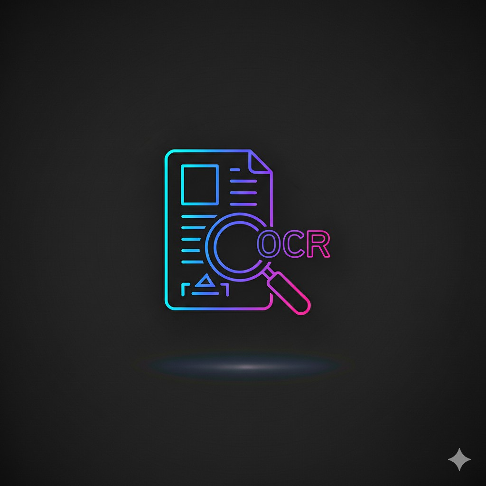

1. Document Intelligence & OCR Automation
We build end-to-end document pipelines: scanning, OCR, semantic parsing, field extraction, entity linking and validation. Our solutions support invoices, receipts, contracts, purchase orders and multi-language documents with high accuracy using a hybrid approach (deep-learning OCR + rules + heuristics). Built-in data validation and human-in-the-loop review ensure low error rates for production workloads.
Key outputs: structured CSV/JSON, validated fields, metadata, audit trail.